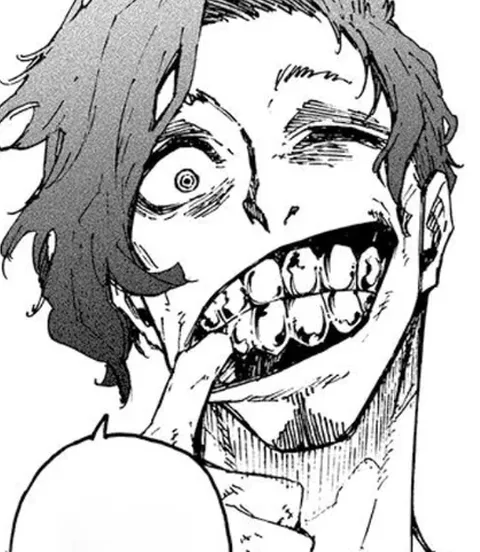

Clubes da NEL
Don Lorenzo
O 'Devorador de Ases', considerado o melhor zagueiro sub-20 do mundo e membro da New Generation World XI. Mede tudo e todos pelo preço — reflexo de uma infância nas ruas, abandonado pelos pais, até ser encontrado por Marc Snuffy, que lhe deu comida, dentes de ouro e o futebol. É o coração da defesa do Ubers e defende a Itália Sub-20.
“Não vai se achar por causa de um golzinho de malandragem... Capisce?”
- Ocupação
- Jogador de futebol
- Posição
- Zagueiro, Meia central
- Arma
- Drible, Marcação individual, Físico
- Afiliação
- Itália, New Generation World XI
- Números de camisa
- 2 (Ubers)
- Família
- dois irmãos mais velhos (nomes não revelados)
- Idade
- 19 anos
- Altura
- 190 cm (6'3")
- Estreia no mangá
- Capítulo 209
Trajetória no Blue Lock
- Neo Egoist League → Ubers → nº 2
- Atual → Itália Sub-20
Pentágono de status
| Finalização | 57 |
|---|---|
| Velocidade | 71 |
| Físico | 78 |
| Leitura | 78 |
| Drible | 69 |
Valores 0–99 estimados pelo site a partir da ficha (ranking, posição e Armas), os mesmos do Duelo x1 · não oficiais.
Como jogar igual a Don
Lorenzo é o canibal da zaga: marca individual, físico bruto e ainda dribla para sair jogando.
Fundamentos
- Marcação individualEngula o atacante; negue o giro e o ângulo de chute.
- FísicoDuelos de ombro e antecipação no alto e no baixo.
- Drible de saídaApós recuperar, conduza e quebre a primeira pressão.
- Leitura de áreaCubra o centro; force o rival para fora.
Exercícios
- 1×1 defensivo contínuo (você só defende).
- Saídas driblando após desarme em corredor.
- Bolas aéreas e segundas bolas na área.
Mentalidade Devore o ataque rival. A zaga também pode ser egoísta.
No videogame
CB / CDM Zagueiro canibal
Atributos-chave: Marcação, Força, Drible, Agressividade
Guia prático do fã-site, baseado na posição e nas Armas da ficha · não é material oficial.
⚔ Desafiar para um x1📋 Escalar na Prancheta
Fonte: Blue Lock Wiki – Don Lorenzo (dados do quadro de informações; campos ausentes na wiki foram omitidos)
Relações
Quem dividiu time com Don Lorenzo nas fases da ficha. A espessura da linha é o número de times em comum.
- Shoei Barou · 1 time junto: Ubers
- Shingen Tanaka · 1 time junto: Ubers
- Oliver Aiku · 1 time junto: Ubers
- Jyubei Aryu · 1 time junto: Ubers
- Yukio Ishikari · 1 time junto: Ubers
- Ikki Niko · 1 time junto: Ubers
- Shuto Sendo · 1 time junto: Ubers
- Gen Fukaku · 1 time junto: Ubers
- Kyohei Shiguma · 1 time junto: Ubers
- Marc Snuffy · 1 time junto: Ubers
Em jogo
Melhores parceiros (mais times juntos): Shoei Barou, Shingen Tanaka, Oliver Aiku.
| Rival | Vitórias | Gols | Duelo |
|---|---|---|---|
| Julien Loki | 0 de 25 | 8 × 63 | jogar |
| Noel Noa | 0 de 25 | 5 × 57 | jogar |
| Yoichi Isagi | 1 de 25 | 12 × 62 | jogar |
| Meguru Bachira | 3 de 25 | 15 × 52 | jogar |
| Rensuke Kunigami | 1 de 25 | 10 × 50 | jogar |
Simulação do motor do Duelo com atributos estimados pelo site (Geral 71), não resultado da obra. Semente fixa pela versão dos dados d02223.
Em números
- 2times na trajetória
- 3Armas na ficha
- 10companheiros mostrados em Relações